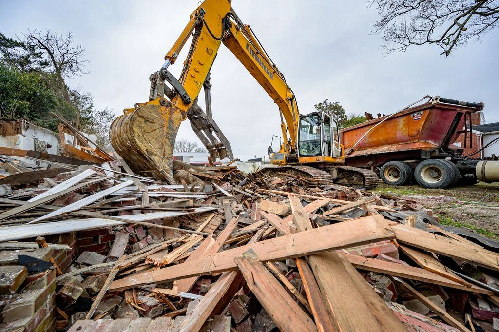

Våra projekt
Ett urval av det vi bygger, utvecklar och förvaltar.
- 2027

Batterifabrik Skellefteå
80 000 ton batterier per år och 260 nya jobb vid full drift.
- 2025

Fragmenteringsverk Kvarnsveden
Ett nytt verk med sensorsortering som ökar utbytet av koppar med 18 procent.
- 2026

Gamla lasarettet
210 000 ton rivningsbetong krossas och läggs i det nya kvarterets grund.
- 2024

Batteriåtervinning Fiskeby
Kapaciteten fördubblades till 60 000 ton per år.
- 2025

Hamnterminal Kotka
Skrot från Finland lastas direkt på fartyg till nordiska stålverk.
- 2026

Ballastterminal Hagby
Ny terminal för 800 000 ton bygg- och rivningsmassor per år norr om Stockholm.
Kunder om Runn
Marie-Louise D. · Sandviken”Runn tar hand om allt spån från vår verkstad och ger oss en månadsrapport som vi använder direkt i hållbarhetsredovisningen.”
Tobias V. · Smedjebacken”Vi köper sorterat stålskrot från Runn till vår ljusbågsugn. Analysen på varje leverans stämmer med det vi mäter själva.”
Lisa N. · Gävle”Ballasten från rivningen hamnade under vår nya förskola i stället för på deponi. Det sparade 1 900 lastbilsresor.”